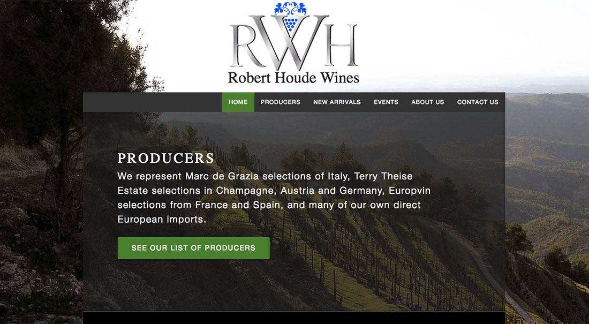

Hello, I’m Enrique
I want to join a collaborative team that crafts meaningful stories, and provides great experiences. As an interaction designer—I can help conceptualize, create, refine, and reimagine products that empower, delight, and enhance their users.
Portfolio
-
Getting Smart on Interaction Design
A brief essay on understanding and communicating interaction design.
-
Celebrate Your Failures
Share the wisdom your failures provide.
-
gravitytank’s Internal Reviews Reimagined
Applying radical innovation to create a human-centered application.
-
Prototyping with Middle Schoolers
Revealing the benefits of contextual inquiry.
-
Storytelling with simple objects
Telling the story of everyday things.
-
I Accidentally Built the Greatest User Interface
A story about reframing and product design.
-

UX, HTML, CSS, jQuery, and Ghost
I helped the clients of Robert Houde Wines make better wine purchasing decisions by designing, developing, and deploying a responsive and user-centered company website. -

UX, HTML, CSS, jQuery, and Jekyll
Austin based start-ups and established businesses have another great option for transactional counsel. In 2013 I worked with Brian Mikulencak to design and develop this website about his practice; for his potential clients. -

UX, HTML, CSS, and jQuery
In 2013 my team designed, developed, and deployed the Chicago24 event website for the Chicago History Museum and its guests. We conducted a series of user tests to ensure a positive experience for people wanting to learn about, and purchase tickets to, Chicago24. The Museum has continued to use the design as a template for the event. -

UX, HTML, CSS, and jQuery
We designed a storytelling blog for Baseball fans and history buffs to experience the story of the Chicago Blacksox as told through the eyes of “Shoeless” Joe Jackson. I consulted on storytelling, and created the Tumblr theme to present the story—created by the Chicago History Museum.
-
From May to August 2014, I worked with gravitytank, an innovation consultancy, to help redefine their internal review system. They brought me in to provide objectivity, synthesize the product’s new meaning, and shape it into a user-centric functional prototype titled Feedback.
To create Feedback I applied lean and agile design and development methodologies. Learn more about my process by reading gravitytank’s Internal Reviews Reimagined. -

UX, HTML, CSS, and Ruby on Rails
In essence Notetato is a wellness tool. Its purpose is to improve your mood by highlighting the work that is important to you, and centering on the good in your day. In its current state, Notetato is a prototype that I’m shaping and evolving with the people who use it.
The next evolutionary steps for Notetato are core scope simplification, and user interface refinement. If you’re interested in helping Notetato grow, please register at http://notetato.herokuapp.com, try it out, and send feedback. I’d love to hear from you.